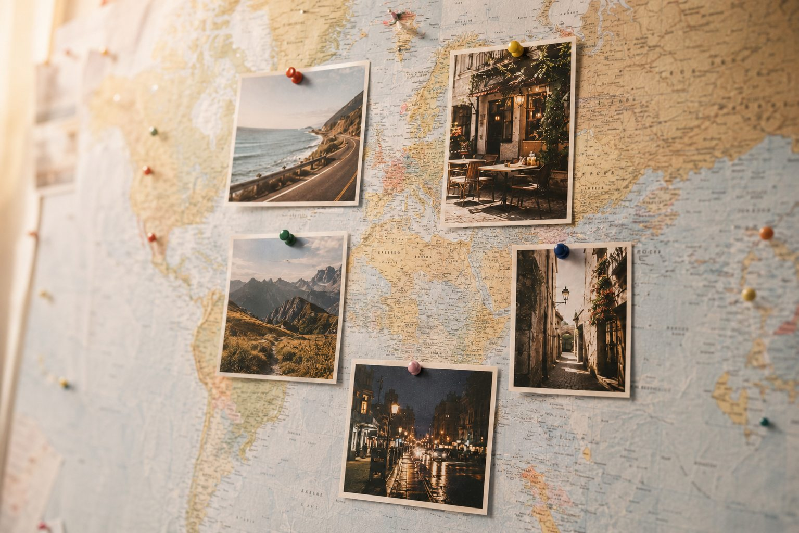
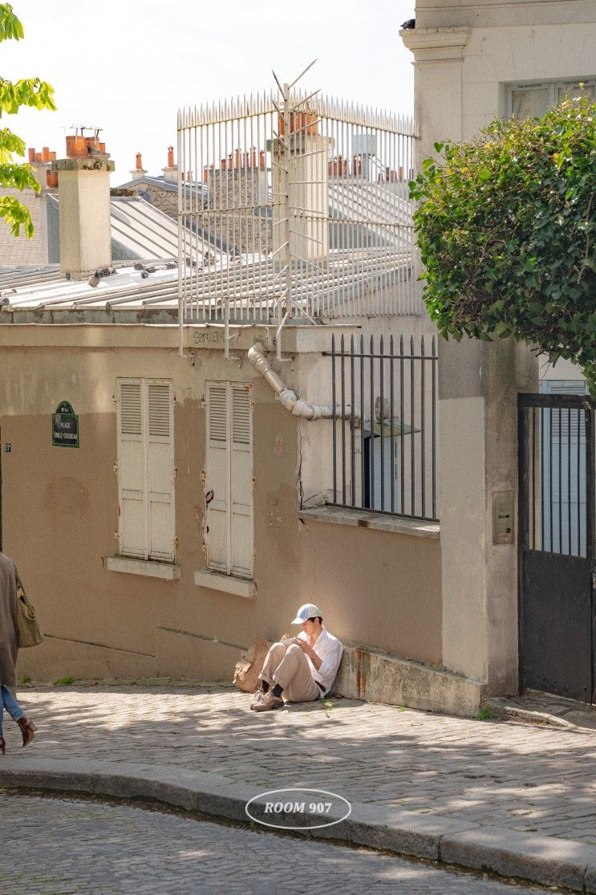
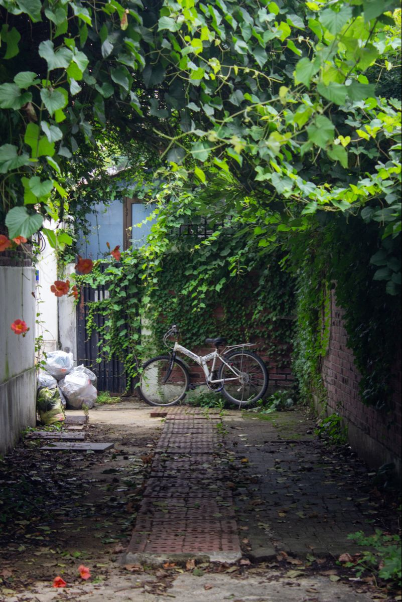

Photo to Map
지도에 핀을 찍듯이 사진을 지도에 직접 올려보세요
업로드한 여행 사진의 위치를 기준으로 핀이 생기고, 장면마다 남겨진 장소와 기록을 한눈에 따라볼 수 있습니다.
이 사진은 어디서 찍은 거지?
Ikkyee에서 취향에 맞는 사진과 장소를 알아가세요.


0장
사진을 여행별 앨범으로 묶어 볼 수 있습니다.
관리자 전용
소제목과 설명을 수정하고, 공개 사진 ID를 원하는 순서대로 입력하세요.
0장
Photo Upload
앨범을 만들지 않고 개별 사진을 내 보관함에 저장합니다. 위치가 없는 사진은 저장 후 개별사진 페이지에서 확인할 수 있습니다.
업로드 준비 완료
업로드할 사진과 기본 비공개 상태를 확인한 뒤 내 개별사진 보관함에 저장합니다.
여행 중 찍은 사진을 기기에서 선택합니다.
GPS가 있는 사진은 자동으로 지도에 연결됩니다.
업로드된 사진은 공개 전까지 Home에만 보관됩니다.
Album Analysis
선택한 사진을 시간과 위치 흐름으로 묶어 여행 앨범 초안을 구성합니다. 사진 업로드와는 다른 앨범 구성 화면입니다.
Suggested album
Public Trip
성산에서 월정리까지 이어지는 바람 많은 해안 길. 공개할 사진만 골라 만든 여행 기록입니다.
3일 · 11곳 · 공개 사진 42장
Day 1
낮게 깔린 시간의 빛을 따라 성산 주변을 천천히 통과했습니다.
Day 2
작은 카페와 바다 사이를 걸으며 사진을 남겼습니다.
Day 3
공개해도 좋은 장면만 골라 하나의 앨범으로 정리했습니다.
공개 앨범에 포함된 대표 사진입니다.